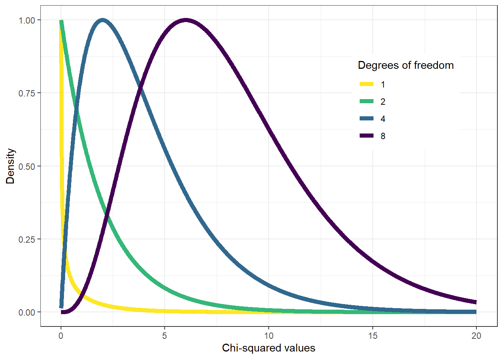
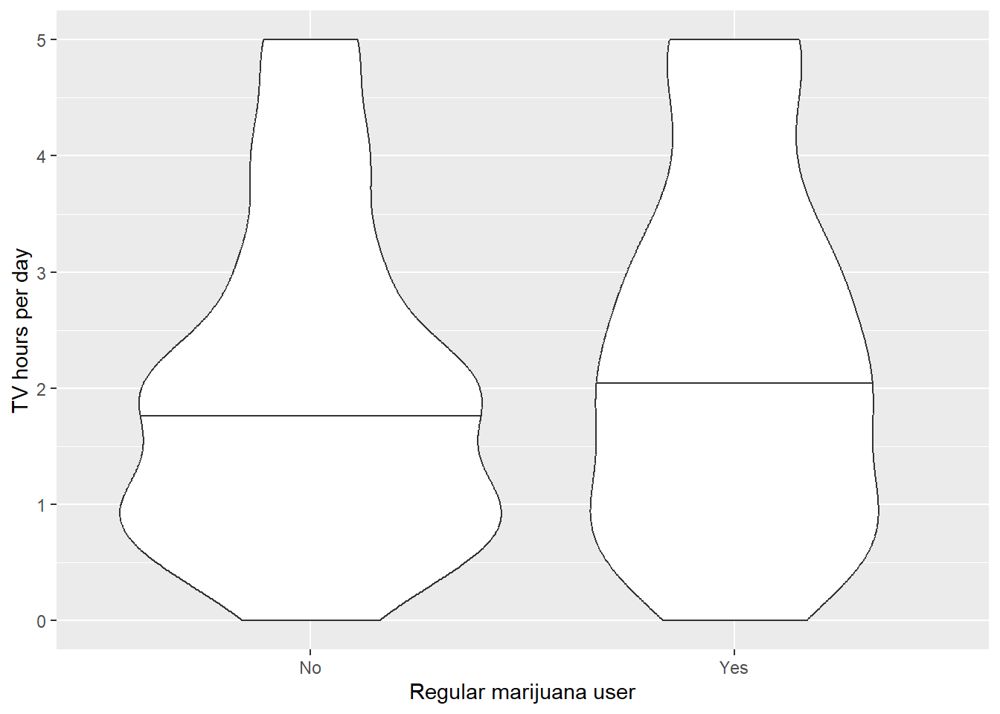

code.sourceCode {
font-size: 1.4em;
}
div.cell-output-stdout {
font-size: 1.4em;
}08 Modeling Relationships
Julius-Maximilians-University Würzburg
Course: “Biostatistics”
Translational Neuroscience
Course: “Biostatistics”
Translational Neuroscience
Modeling Categorical Relationships
Attache Paket: 'kableExtra'Das folgende Objekt ist maskiert 'package:dplyr':
group_rows
Attache Paket: 'sfsmisc'Das folgende Objekt ist maskiert 'package:dplyr':
last
Attache Paket: 'cowplot'Das folgende Objekt ist maskiert 'package:patchwork':
align_plotsDas folgende Objekt ist maskiert 'package:lubridate':
stampNow that we have covered the basics, we will apply them and turn to the question how to model particular relationships.
Chi² Test: General
We will first focus on modeling categorical relationships (of variables that are qualitative!).
. . .
These data are usually expressed in terms of counts.
. . .
Example: Candy colors
Bag of candy: 30 chocolates, 33 licorices, and 37 gumballs.
. . .
Is the distribution fair (i.e., 1/3rd of the bag = each candy) and the fact that there are only 30 chocolates a random accident?
. . .
What is the likelihood that the count would come out this way (or even more extreme) if the true probability of each candy type is the same?
Counts: For each combination of variables, how many observations do we have?
If the machine really sorts on average 1/3 of each in each bag? How much is due to chance?
Chi² Test: One Variable
The Chi² test checks whether observed counts differ from expected values (\(H_0\)).
\[ \chi^2 = \sum_i\frac{(observed_i - expected_i)^2}{expected_i} \]
. . .
The null hypothesis in our example is that the proportion of each type of candy is equal (1/3 or ~33.33).
If we plug in our values from above, we would calculate \(\chi^2\) like this:
\[ \chi^2 = \frac{(30 - 33.33)^2}{33.33} + \frac{(33 - 33.33)^2}{33.33} + \frac{(37 - 33.33)^2}{33.33} = 0.74 \]
take the difference between observed and expected (33.33), square it, divide it by expected 33.33 and add everything up
Chi² Test: General 2
On its own, the \(\chi^2\) statistic is not interpretable - it depends on its distribution.
The shape of the chi-squared distribution depends on the degrees of freedom (much like the t distribution), which is the number of category levels \(k-1\).
Warning: Using `size` aesthetic for lines was deprecated in ggplot2 3.4.0.
ℹ Please use `linewidth` instead.Warning: A numeric `legend.position` argument in `theme()` was deprecated in ggplot2
3.5.0.
ℹ Please use the `legend.position.inside` argument of `theme()` instead.
For the candy example, we use a chi-squared distribution with DFs = 2 (3 candy categories minus one). If we’d look at the distribution and found \(\chi^2 = .74\) on the x-axis, we would see that it does not fall far into the tail of the distribution but is rather in the middle. If we calculate the p-value, we’d get \(P(\chi^2 > .74) = 0.691\).
It is thus not particularly surprising to find this distribution of candies and we would not reject \(H_0\) (equal proportions).
Contingency Tables and the Two-Way Test
The \(\chi^2\) test is also used to test whether two categorical variables are related to each other.
. . .
Example: Are Black drivers more likely to be pulled over by police than white drivers?
We have two variables: Skin color (black vs white) and being pulled over (true vs. false). We can represent the data in a contingency table (remember: the count() function was helpful to do this in R):
| searched | Black | White | Black (relative) | White (relative) |
|---|---|---|---|---|
| FALSE | 36244 | 239241 | 0.1295298 | 0.8550062 |
| TRUE | 1219 | 3108 | 0.0043565 | 0.0111075 |
. . .
If there is no relationship between skin color and being searched, the frequencies of searches would be proportional to the frequencies of skin color. This would be our expected values. We can determine them using probabilities:
| Black | White | ||
|---|---|---|---|
| Not searched | \(P(\neg S)*P(B)\) | \(P(\neg S)*P(W)\) | \(P(\neg S)\) |
| Searched | \(P(S)*P(B)\) | \(P(S)*P(W)\) | \(P(S)\) |
| \(P(B)\) | \(P(W)\) | \(100\%\) |
Remember: You can only multiply two probabilities to get their conjoint probability if they are independent. Here, we assume independence to calculate expected values and then check how much our observed values deviate from independence.
Probabilities: Because we expect the variables to be unrelated, we can calculate the joint probability as the product of the marginal probabilities:
\(P(X \cap Y) = P(X) * P(Y)\)
Marginal probabilities are the prob of each event occuring regardless of other events (in the margins of the table!)
Chi² Test: Two Variables
If we compute the standardized squared difference between observed and expected values, we can sum them up to get \(\chi^2 = 828.3\)
| searched | driver_race | n | expected | stdSqDiff |
|---|---|---|---|---|
| FALSE | Black | 36244 | 36883.67 | 11.09 |
| TRUE | Black | 1219 | 579.33 | 706.31 |
| FALSE | White | 239241 | 238601.33 | 1.71 |
| TRUE | White | 3108 | 3747.67 | 109.18 |
We can then compute the p-value using a chi-squared distribution with \(DF = (levels_{var1} - 1) * (levels_{var2} - 1) = (2-1) * (2-1) = 1\)
We can also calculate a \(\chi^2\) test easily in R:
chisq.test(summaryDf2wayTable, correct = FALSE)
Pearson's Chi-squared test
data: summaryDf2wayTable
X-squared = 828.3, df = 1, p-value < 2.2e-16The results indicate that the data are highly unlikely if there was no true relationship between skin color and police searches! We would thus reject \(H_0\).
Question: What is the direction of the observed relationship?
DF: computing the expected frequencies requires three values: total number of observations and marg probs each variable. thus only one of the four values can vary freely.
Standardized Residuals
If we want to know not only whether but also how the data differ from what we would expect under \(H_0\), we can examine the residuals of the model.
The residuals tell us for each cell how much the observed data deviates from the expected data.
To make the residuals better comparable, we will look at the standardized residuals:
\[ \text{standardized residual}_{ij} = \frac{observed_{ij} - expected_{ij}}{\sqrt{expected_{ij}}} \]
where \(i\) and \(j\) are the rows and columns respectively.
. . .
Negative residuals indicate an observed value smaller than expected.
| searched | driver_race | Standardized residuals |
|---|---|---|
| FALSE | Black | -3.330746 |
| TRUE | Black | 26.576456 |
| FALSE | White | 1.309550 |
| TRUE | White | -10.449072 |
raw residuals depend on number of observations!
Black individuals are searched way more often than expected –> helps us intepret significant results.
Odds Ratios
Alternatively, we can represent the relative likelihood of different outcomes as odds ratios:
\[ odds_{searched|black} = \frac{N(searched\cap black)}{N(\neg searched \cap black)} = \frac{1219}{36244} = 0.034 \]
\[ odds_{searched|white} = \frac{N(searched \cap white)}{N(\neg searched \cap white)} = \frac{3108}{239241} = 0.013 \]
\[ odds\ ratio = \frac{odds(searched|black)}{odds(searched|white)} = 2.59 \]
The odds of being searched are 2.59x higher for Black vs. white drivers!
Simpson’s Paradox
The Simpson’s Paradox is a great example of misleading summaries.
If we look at the baseball data below, we see that David Justice has a better batting average in every single year, but Derek Jeter has a better overall batting average:
| Player | 1995 | 1996 | 1997 | Combined | ||||
|---|---|---|---|---|---|---|---|---|
| D. Jeter | 12/48 | .250 | 183/582 | .314 | 190/654 | .291 | 385/1284 | .300 |
| D. Justice | 104/411 | .253 | 45/140 | .321 | 163/495 | .329 | 312/1046 | .298 |
How can this be?
. . .
Simpson’s Paradox: A pattern is present in the combined dataset but may be different in subsets of the data.
. . .
Happens if another (lurking) variable changes across subsets (e.g., the number of at-bats, i.e., the denominator).
batting average: hits/at bats
1995: in general low batting averages, Justice a lot of at-bats => diminishes total combined value more strongly than for Jeter.
Simpson’s Paradox: More intuitive
While typing on a keyboard, what is the relationship between speed and accuracy (or typing errors)?
(positive, negative, or none)
. . .
If I try to type faster, I will make more errors => speed-accuracy trade-off (negative association)
People who are better at typing usually are both faster and make fewer mistakes (positive association)
. . .
Answer: It depends
- Within a person, the relationship between speed and accuracy is negative. My own skill is limited, I can either use it for speed or accuracy.
- Between persons, the relationship is positive due to inter-individual differences in overall typing skill.
Usually, when leveling up, people don’t put all their skill points in only speed or accuracy.
Modeling Continuous Relationships
Example: Income Inequality and Hate Crimes
We want to look at a dataset that was used for an analysis of the relationship between income inequality (Gini index) and the prevalence of hate crimes in the USA.

It looks like there is a positive relationship between the variables. How can we quantify this relationship?
Covariance and Correlation
Covariance: How much do two variables co-vary with each other?
Variance (single variable): \(s^2 = \frac{\sum_{i=1}^n (x_i - \bar{x})^2}{N - 1}\)
Covariance (two variables): \(covariance = \frac{\sum_{i=1}^n (x_i - \bar{x})(y_i - \bar{y})}{N - 1}\)
(Side note: Variance is the covariance of a variable with itself.)
. . .
“Is there a relation between the deviations of two different variables (from their means) across observations?”
. . .
Will be far from 0 if data points share a relationship. Positive values for same direction, negative values for opposite directions.
. . .
Covariance varies with overall level of variance in the data, so not that useful to describe relationships in general.
. . .
Correlation coefficient (Pearson correlation): Scales the covariance by the standard deviations of the two variables and thus standardizes it (=> \(r\) varies between \(-1\) and \(1\) => comparability!)
\[ r = \frac{covariance}{s_xs_y} = \frac{\sum_{i=1}^n (x_i - \bar{x})(y_i - \bar{y})}{(N - 1)s_x s_y} \]
Covariance depends on dataset!
Hypothesis Testing for Correlations
The correlation between income inequality and hate crimes is \(r = .42\), which seems to be a reasonably strong (positive) relationship.
. . .
We can test whether such a relationship could occur by chance, even if there is actually no relationship. In this case, our null hypothesis is \(H_0: r = 0\).
. . .
To test whether there is a significant relationship, we can transform the \(r\) statistic into a \(t\) statistic:
\[ t_r = \frac{r\sqrt{N-2}}{\sqrt{1-r^2}} \]
We can compute this easily in R:
# perform correlation test on hate crime data
cor.test(
hateCrimes$avg_hatecrimes_per_100k_fbi,
hateCrimes$gini_index
)
Pearson's product-moment correlation
data: hateCrimes$avg_hatecrimes_per_100k_fbi and hateCrimes$gini_index
t = 3.2182, df = 48, p-value = 0.002314
alternative hypothesis: true correlation is not equal to 0
95 percent confidence interval:
0.1619097 0.6261922
sample estimates:
cor
0.4212719 The p-value is quite small, which indicates that it is quite unlikely to find an \(r\) value this high or more extreme. We would thus reject \(H_0: r = 0\).
Side note: There are more beautiful / convenient ways to do this in R. We will cover this in the next session.
subsetting with $!
Robust Correlations
In the plot, we have seen an outlier: The District of Columbia was quite different from the other data points.
. . .
The Pearson’s correlation coefficient \(r\) is highly sensitive to outliers, see this hypothetical example:

Robust Correlation 2
We can use a different correlation coefficient, though, which is less sensitive to outliers: Spearman correlation.
It is based on ranking (i.e., ordering) the data and using the ranks (instead of the original data) for the correlation.
cor.test(hateCrimes$avg_hatecrimes_per_100k_fbi,
hateCrimes$gini_index,
method = "spearman")Warning in cor.test.default(hateCrimes$avg_hatecrimes_per_100k_fbi,
hateCrimes$gini_index, : Kann exakten p-Wert bei Bindungen nicht berechnen
Spearman's rank correlation rho
data: hateCrimes$avg_hatecrimes_per_100k_fbi and hateCrimes$gini_index
S = 20146, p-value = 0.8221
alternative hypothesis: true rho is not equal to 0
sample estimates:
rho
0.03261836 The correlation has now dropped from \(.42\) to \(.03\) and is no longer significant. The influence of the one outlier has been greatly diminished.
Of course, a ranked correlation can also obscure true effects that critically depend on the scale of the data. When in doubt, try both and discuss reasons for differences.
Without outlier: perfectly negative correlation, with outlier: highly positive!
Correlation and Causation
Doing a well controlled, randomized experiment (RCT) is extremely helpful to gather causal evidence.
However, it is not always possible or ethical to do an experiment!
We can still collect (observational) data. However, if we correlate two variables, we can’t conclude that one causes the other: They might be related but there could also be a third variable that causes both (or even more complex causal structures).
. . .
If we have observational data, causal graphs can be helpful for interpreting causality:

Circle: observed variables
rectangle: latent (unobservable) variable
Green arrow: positive relationship,
red: negative
ExamGrade and FinishTime seem negatively related if we ignore other variables!
(“Hand in your exam early to improve your grade!”)
Knowledge = theoretical mediator
StudyTime = proxy for knowledge
If we control for StudyTime (which approximates individual knowledge), we find out that ExamGrade and FinishTime are (causally) unrelated!
We have briefly talked about causation in week 1
Think of data/questions where it is impossible/unethical!
abused children and brain development!
(3rd var: family stress -> less intellectual engagement –> poorer brain dev)
Correlation: s.th. is probably causing s.th. else but not clear what causes what!
DAG:
green: pos, red: net
circle: observed, rect: latent (unobservable)
ExamGrade and FinishTime seem neg related if we ignore others
knowledge = mediates
StudyTime = proxy for knowledge, if we “control” it/hold it constant/only use people with same amount, we would see that EG and FT are unrelated!
Comparing Means (Group Differences)
Testing a Single Mean (One sample t-Test)
We sometimes might want to know whether a single value, the mean of a group, differs from a specific value, e.g. whether the blood pressure in the sample differs from or is bigger than 80.
. . .
We can test this using the \(t\)-test, which we have already encountered in the “Hypothesis Testing” session!
\[ t = \frac{\hat{X} - \mu}{SEM} \]
\[ SEM = \frac{\hat{\sigma}}{\sqrt{n}} \]
\(\hat{X}\) is the mean of our sample, \(\mu\) the hypothesized population mean (e.g. the value we want to test against, such as 80 for the blood pressure example).
We can easily calculate the \(t\)-test in R:
t.test(x=NHANES_adult$BPDiaAve, mu=80, alternative='greater')
One Sample t-test
data: NHANES_adult$BPDiaAve
t = -55.23, df = 4599, p-value = 1
alternative hypothesis: true mean is greater than 80
95 percent confidence interval:
69.1588 Inf
sample estimates:
mean of x
69.47239 (The \(t\) statistic thus asks how large the deviation of sample mean from the expected value with respect to the sampling variability of the mean!)
We tested the one-sided alternative (>) and the blood pressure in the sample is much lower than 80, so it is far from significance
We can’t interpret the \(p\)-value as evidence in favor of \(H_0\) (i.e. larger \(p\)-value! vs non.sign) –> Bayes!
Comparing Two Means (Two sample t-Test)
More often, we want to know whether there is a difference between the means of two groups.
Example: Do regular marijuana smokers watch more television?
In this example, we expect that they watch more TV, which leads us to the following directional hypotheses:
\(H_0\) = marijuana smokers watch less or equally often TV,
\(H_A\) = marijuana smokers watch more TV.
set.seed(123456)
# drop duplicated IDs within the NHANES dataset
NHANES <-
NHANES %>%
dplyr::distinct(ID,.keep_all=TRUE)
NHANES_adult <-
NHANES %>%
subset(Age>=18) %>%
drop_na(BMI)
# create sample with tv watching and marijuana use
NHANES_sample <-
NHANES_adult %>%
drop_na(TVHrsDay, RegularMarij) %>%
mutate(
TVHrsNum = recode( #recode character values into numerical values
TVHrsDay,
"More_4_hr" = 5,
"4_hr" = 4,
"2_hr" = 2,
"1_hr" = 1,
"3_hr" = 3,
"0_to_1_hr" = 0.5,
"0_hrs" = 0
)
) %>%
sample_n(200)
p1 <- ggplot(NHANES_sample,aes(RegularMarij,TVHrsNum)) +
geom_violin(draw_quantiles=.50) +
labs(
x = "Regular marijuana user",
y = "TV hours per day"
)
p1
If the observations are independent (i.e. you really have two unrelated groups), you can use a very similar formula to calculate the \(t\) statistic:
\[ t = \frac{\bar{X_1} - \bar{X_2}}{\sqrt{\frac{S_1^2}{n_1} + \frac{S_2^2}{n_2}}} \]
whereby \(\hat{X_1}\) and \(\hat{X_2}\) are the group means, \(S_1^2\) and \(S_2^2\) the group variances, and \(n_1\) and \(n_2\) the group sizes.
Here are the results from a one-tailed \(t\)-test in R:
t.test(
TVHrsNum ~ RegularMarij,
data = NHANES_sample,
alternative = 'less' # because of coding of the groups!
)
Welch Two Sample t-test
data: TVHrsNum by RegularMarij
t = -1.2147, df = 116.9, p-value = 0.1135
alternative hypothesis: true difference in means between group No and group Yes is less than 0
95 percent confidence interval:
-Inf 0.09866006
sample estimates:
mean in group No mean in group Yes
2.02963 2.30000 DV: continuous, IV: categories
n.s. (differs from book), although mean is higher in Yes, not significantly different!
Comparing Dependent Observations (Paired t-test)
If we have repeated observations of the same subject (i.e., a within-subject design), we might want to compare the same subject thus on multiple, repeated measurements.
. . .
If we want to test whether blood pressure differs between the first and second measurement session across individuals, we can use a paired \(t\)-test.
In R, we would run a paired-samples \(t\)-test like this:
set.seed(12345678)
NHANES_sample <-
NHANES %>%
dplyr::filter(Age>17 & !is.na(BPSys2) & !is.na(BPSys1)) %>%
dplyr::select(BPSys1,BPSys2,ID) %>%
sample_n(200)
NHANES_sample_tidy <-
NHANES_sample %>%
gather(timepoint,BPsys,-ID)with(NHANES_sample, t.test(BPSys1, BPSys2, paired = TRUE))
Paired t-test
data: BPSys1 and BPSys2
t = 2.7369, df = 199, p-value = 0.006763
alternative hypothesis: true mean difference is not equal to 0
95 percent confidence interval:
0.2850857 1.7549143
sample estimates:
mean difference
1.02 Side note: A paired \(t\)-test is equivalent to a one-sample \(t\)-test, when using the paired differences as \(\hat{X}\) and testing them against a value of 0 (if we expect no difference for \(H_0\)) for \(\mu\).
important: If we run an independent sample t-test, it would probably be n.s.! (check out book)
Comparing More Than Two Means
Often, we want to compare more than two means, e.g. different treatment groups or timepoints.
Example: Different treatments for blood pressure
set.seed(123456)
nPerGroup <- 36
noiseSD <- 10
meanSysBP <- 140
effectSize <- 0.8
df <- data.frame(
group=as.factor(c(rep('placebo',nPerGroup),
rep('drug1',nPerGroup),
rep('drug2',nPerGroup))),
sysBP=NA)
df$sysBP[df$group=='placebo'] <- rnorm(nPerGroup,mean=meanSysBP,sd=noiseSD)
df$sysBP[df$group=='drug1'] <- rnorm(nPerGroup,mean=meanSysBP-noiseSD*effectSize,sd=noiseSD)
df$sysBP[df$group=='drug2'] <- rnorm(nPerGroup,mean=meanSysBP,sd=noiseSD)
ggplot(df,aes(group,sysBP)) + geom_boxplot()
Analysis of Variance (ANOVA)
\(H_0\): all means are equal
\(H_A\): not all means are equal (e.g. at least one differs)
. . .
We can partition the variance in the data into different parts:
\(SS_{total}\) = total variance in the data
\(SS_{model}\) = Variance explained by the model*
\(SS_{error}\) = Variance not explained by the model
. . .
We can use those to calculate the mean squares for the model and the error:
\(MS_{model} =\frac{SS_{model}}{df_{model}}= \frac{SS_{model}}{p-1}\) (\(p\) is the number of factor levels)
\(MS_{error} = \frac{SS_{error}}{df_{error}} = \frac{SS_{error}}{N - p}\)
. . .
We want to test whether the variance accounted for by the model is greater than expected by chance (\(H_0\): no difference).
\(SS\) = Sum of Squares, remember that the variance is the sum of the squared deviation of an observation to the mean
\(MS\) = Mean (Sum of) Squares: How much variance per degree of freedom?
*more on that in the next session!
quite common analysis! We will just scratch the surface
ANOVA 2
In R, we would run an ANOVA like this:
df <-
df %>%
mutate(group2=fct_relevel(group,c("placebo","drug1","drug2")))
# reorder the factor levels so that "placebo" is the control condition/intercept!
# test model without separate duymmies
lmResultAnovaBasic <- lm(sysBP ~ group2, data=df)
summary(lmResultAnovaBasic)
Call:
lm(formula = sysBP ~ group2, data = df)
Residuals:
Min 1Q Median 3Q Max
-29.0838 -7.7452 -0.0978 7.6872 23.4313
Coefficients:
Estimate Std. Error t value Pr(>|t|)
(Intercept) 141.595 1.656 85.502 < 2e-16 ***
group2drug1 -10.237 2.342 -4.371 2.92e-05 ***
group2drug2 -2.027 2.342 -0.865 0.389
---
Signif. codes: 0 '***' 0.001 '**' 0.01 '*' 0.05 '.' 0.1 ' ' 1
Residual standard error: 9.936 on 105 degrees of freedom
Multiple R-squared: 0.1695, Adjusted R-squared: 0.1537
F-statistic: 10.71 on 2 and 105 DF, p-value: 5.83e-05# emm.result <- emmeans(lmResultAnovaBasic, "group" )ANOVA 3
summary(lmResultAnovaBasic)
Call:
lm(formula = sysBP ~ group2, data = df)
Residuals:
Min 1Q Median 3Q Max
-29.0838 -7.7452 -0.0978 7.6872 23.4313
Coefficients:
Estimate Std. Error t value Pr(>|t|)
(Intercept) 141.595 1.656 85.502 < 2e-16 ***
group2drug1 -10.237 2.342 -4.371 2.92e-05 ***
group2drug2 -2.027 2.342 -0.865 0.389
---
Signif. codes: 0 '***' 0.001 '**' 0.01 '*' 0.05 '.' 0.1 ' ' 1
Residual standard error: 9.936 on 105 degrees of freedom
Multiple R-squared: 0.1695, Adjusted R-squared: 0.1537
F-statistic: 10.71 on 2 and 105 DF, p-value: 5.83e-05We can see a \(t\)-test for every drug. This is because the factor group2 is automatically dummy coded by R: We always compare one drug against the intercept, which is the mean of the placebo group!
The \(t\)-test shows us that drug1 differs significantly from placebo but not drug2.
The \(F\)-statistic (also called omnibus test) actually tests our overall hypothesis of no difference between conditions.
ANOVA side notes
In R, there are different functions that you can use to run an ANOVA besides lm(), which have different advantages and disadvantages (functions like ezANOVA() from the ez packages or functions from the afex package might be helpful).
Just like with the \(t\)-test, there’s also a distinction between between-subjects and within-subjects (i.e., repeated measures ANOVA). The previous example contained just between-subjects measures, i.e. different groups without repeated measures. We will talk about other options later, but see the packages mentioned above as well for functional parameters called, e.g., within.
Dummy coded (explicitly):
df <-
df %>%
mutate(
d1 = as.integer(group == "drug1"), # 1s for drug1, 0s for all other drugs
d2 = as.integer(group == "drug2") # 1s for drug2, 0s for all other drugs
)
# fit ANOVA model
lmResultANOVA <- lm(sysBP ~ d1 + d2, data = df)
summary(lmResultANOVA)
Call:
lm(formula = sysBP ~ d1 + d2, data = df)
Residuals:
Min 1Q Median 3Q Max
-29.0838 -7.7452 -0.0978 7.6872 23.4313
Coefficients:
Estimate Std. Error t value Pr(>|t|)
(Intercept) 141.595 1.656 85.502 < 2e-16 ***
d1 -10.237 2.342 -4.371 2.92e-05 ***
d2 -2.027 2.342 -0.865 0.389
---
Signif. codes: 0 '***' 0.001 '**' 0.01 '*' 0.05 '.' 0.1 ' ' 1
Residual standard error: 9.936 on 105 degrees of freedom
Multiple R-squared: 0.1695, Adjusted R-squared: 0.1537
F-statistic: 10.71 on 2 and 105 DF, p-value: 5.83e-05\(t\)-tests: dummy coded = 0 vs. 1
- control for multiple comparisons! (later)
- if we wanted to compare the two drugs, we’d have to dummy code/relevel differently or use follow-up comparisons like with emmeans()
\(F\): Is our model better than a simple model that just includes the intercept? In this case placebo…
Thanks!
Learning objectives:
What are contingency tables and how do we use \(\chi^2\)-tests to assess a significant relationship between categorical variables?
Be able to describe what a correlation coefficient is and compute & interpret it.
Know what a \(t\)-test & ANOVA is and how to compute and interpret it.
Next:
Practical exercises in R!